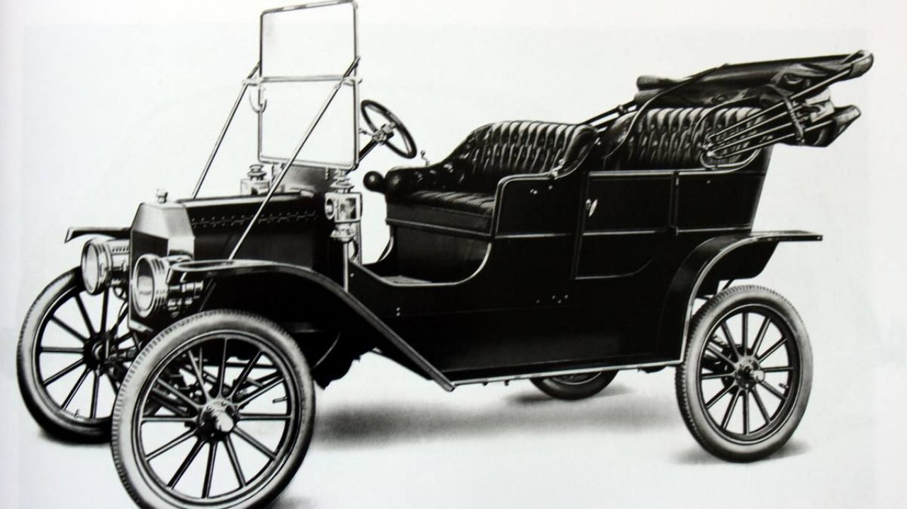
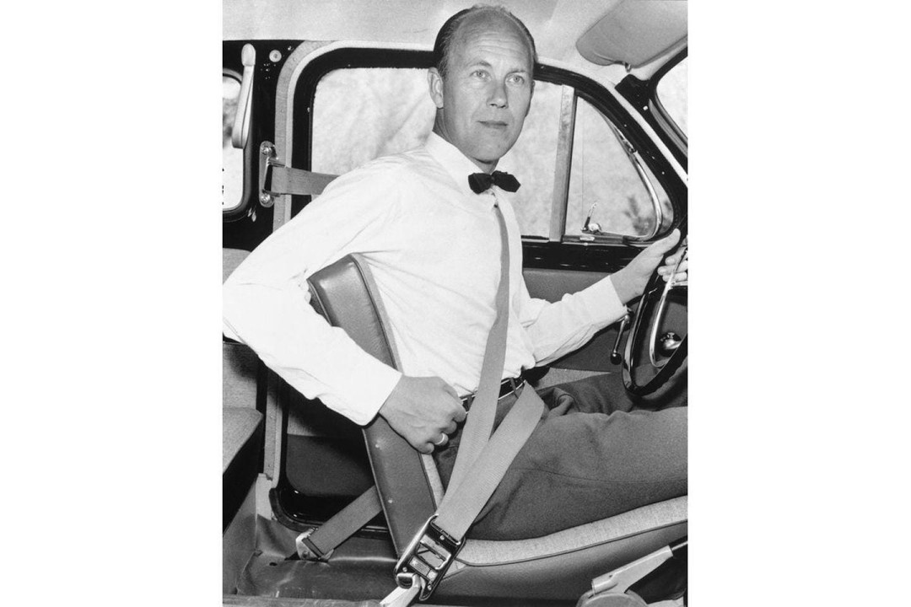
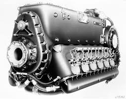
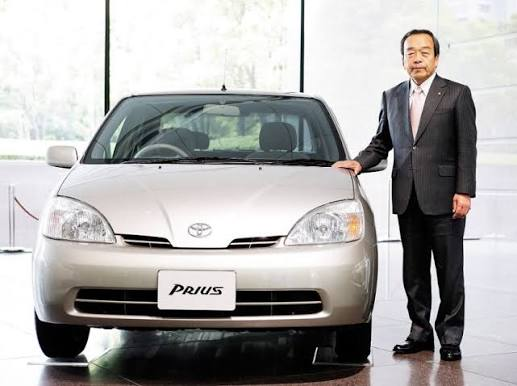
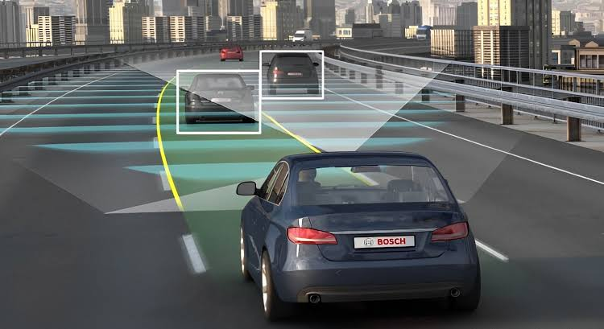
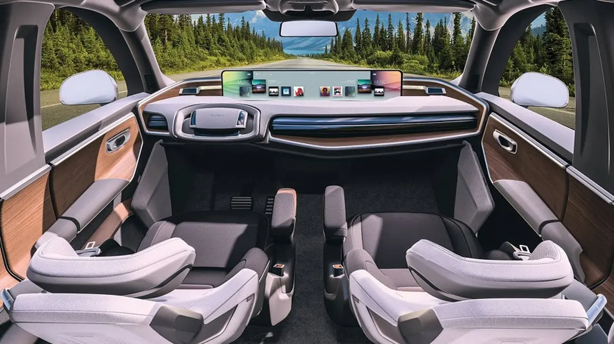

Línea del Tiempo: La Evolución del Automóvil
Análisis integral de las transformaciones tecnológicas, industriales, sociales y ecológicas del transporte autopropulsado
El Primer Automóvil a Vapor (Fardier de Cugnot)

Nicolas-Joseph Cugnot diseñó el primer vehículo autopropulsado mediante un motor de vapor de dos cilindros verticales y tres ruedas mecánicas.
Motor de Combustión Interna

Karl Benz patenta el primer vehículo con motor de combustión interna a gasolina de cuatro tiempos. Paralelamente, Gottlieb Daimler desarrolla el modelo de cuatro ruedas.
Producción en Masa (Ford Modelo T)

Henry Ford estandarizó la línea de ensamblaje móvil con el Modelo T, transformando la fabricación artesanal en producción industrial continua.
Aerodinámica y Masificación (Volkswagen Beetle)

Surge el Volkswagen Tipo 1, enfocado en un chasis aerodinámico con forma de gota, mecánica simple refrigerada por aire y máxima durabilidad urbana.
Cinturón de Seguridad y Seguridad Pasiva

Nils Bohlin inventa el cinturón de tres puntos para Volvo, empresa que libera la patente al público para proteger la vida humana a nivel global.
Inyección Electrónica y Reducción de Emisiones

Tras la crisis petrolera, la industria sustituyó carburadores mecánicos por inyección electrónica (EFI) controlada por microprocesadores primarios.
Masificación del Motor Híbrido (Toyota Prius)

Lanzamiento masivo del Toyota Prius, combinando un motor térmico de gasolina eficiente con un motor eléctrico y baterías autorrecargables.
Revolución de Baterías e Integración Eléctrica

Nace la era eléctrica de alta autonomía con baterías de iones de litio (Tesla Roadster), superando en aceleración y eficiencia a la combustión tradicional.
Telemetría, Conectividad IoT y ADAS

Los autos incorporan radares de onda milimétrica, cámaras hiperfocales y conexión permanente IoT para sistemas de seguridad activa ADAS.
IA Integrada y Vehículos SDV

Consolidación de Vehículos Definidos por Software (SDV), sensores LiDAR, IA multimodal y conducción autónoma conectada a redes de energía limpia.